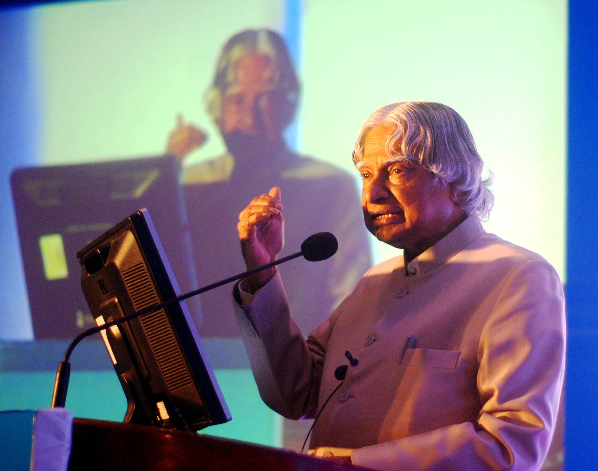

A man with many "Motives"

Speech given at a meeting by Dr. Abdul Kalam
Here's a time line of Dr. Kalam's life:
- 1931 - Born in Madras, India.
- 1954 - Graduated in physics from university of Madras.
-
1960 - Graduated in Aeroscape Engineering from Madras Institute of Technology and joined in Aeronautical
Development Establishmnet of the Defence Research & and Development Service.
- 1963 - Visited NASA's Langley Research Center, Goddard Space FLight center and Wallops Flight facility.
-
1969 - Transferred to ISRO and been the Project Director of India's first satellite
Launch Vehicle(SLV-III).
-
1970 - Started to make effort to develop Polar Satellite Launch Vehicle(PSLV).
Directed two projects Project Devil and Project Valiant.
-
1980 - Government prompted to initiate an advanced missile programme, with many others
kalam named the missile Integrated Guided Missile Development Programme(IGMDP).
- 1981 - Received Padma Bhushan award.
- 1990 - Received Padma Vibhushan award for his work at ISRO and DRDO.
-
1992 - He started serving as Cheif Scientific Advisor to Prime Minister and Secretary of DRDO.
Pokhran-II nuclear tests were conducted during this period i.e 1992-1999. He was Cheif Project Coordinator during testing phase.
- 1997 - Received Bharat Ratna award.
li>
1998 - Along with Soma Raju,cardiologist he developed a low cost Coronary stent named "Kalam-Raju-Stent"
and designed a rugged tablet for rural areas named "Kalam-Raju-Tablet".
-
2002 - He won presidential election and served as 11th President of India and is the third president to receive
Bharat Ratna award before becoming the president.He was also first scientist and first Bachelor to occupy Rashtrapati Bhawan.
- 2003 - Supported the need of Uniform Civil Code.
- 2007 -His term for presidency got expired.
-
2012 -Kalam declined the contest of presidential poll. He launched a programme for the
Youth of India called What Can I Give Movement with the central theme of defeating corruption.
- 2015 - At the age of 83, Death taken place due to cardiac arrest.
"My message, especially to young people, is to have courage to think differently, courage to invent, to travel the unexplored path, courage to discover the
impossible and to conquer the problems and succeed."
__ Indian President Dr. APJ Abdul Kalam
To know more about this Incredible person, you can from Wikipedia Entry!